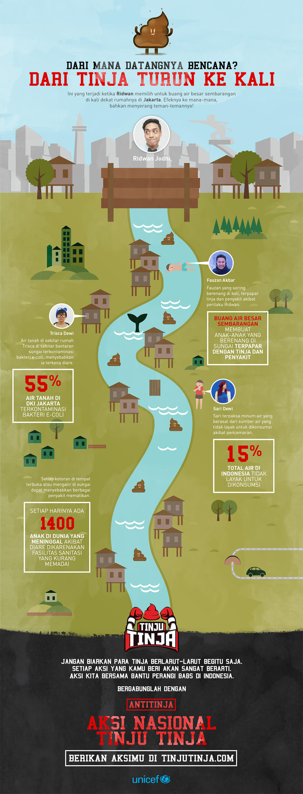
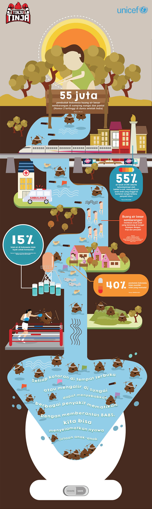

<!DOCTYPE html>
<html>
<head>
<meta charset="UTF-8" />
<meta name="viewport" content="target-densitydpi=device-dpi; width=device-width; initial-scale=1.0; maximum-scale=1.0; user-scalable=0;"/>
<meta name="HandheldFriendly" content="true" />
<title>Infografis | Tinju Tinja</title>
<link href="css/fontAttach/style.css" rel="stylesheet" type="text/css">
<link href="css/tinjutinja.css" rel="stylesheet" type="text/css">
<link href="css/jquery.bxslider.css" rel="stylesheet" type="text/css">
<link href="css/selectordie.css" rel="stylesheet" type="text/css">
<link href="css/component.css" rel="stylesheet" type="text/css">
<script src="js/jquery-2.1.3.min.js"></script>
<script src="js/jquery.bxslider.min.js"></script>
<script src="js/selectordie.min.js"></script>
<script src="js/modernizr.custom.js"></script>
<script src="js/masonry.pkgd.min.js"></script>
<script src="js/imagesloaded.js"></script>
<script src="js/classie.js"></script>
<script src="js/AnimOnScroll.js"></script>
<script src="js/main.js"></script>
</head>

<body>
	<div class="wrapper">
    	<header>
        	<div class="headerBox">
                <h1><a href="index.html" id="logo">Tinju Tinja</a></h1>
                <div class="headerRight">
                    <ul class="language">
                        <li><a href="#">IND</a></li>
                        <li><a href="#">ENG</a></li>
                    </ul>
                    <div class="menuBtn">
                    	<span></span>
                        <span></span>
                        <span></span>
                    </div>
                </div>
            </div>
        </header>
        <section id="infografis_section">
        	<div class="container">
            	<div class="content">
                	<h3>Infografis</h3>
                    <p>Pelajari bagaimana masalah BABS dan kebersihan memiliki dampak yang besar di lingkungan dan hidup kita. Download dan sebarkan infografis ini agar lebih banyak orang yang sadar akan bahaya BABS yang mengancam, dan berpartisipasi dalam Aksi Nasional Tinju Tinja!</p>
                    <div class="infografisInfoBox">
                    	<div class="infografisInfoLeft">
                        </div>
                        <div class="infografisInfoRight">
                        	<h3>BUAT INFOGRAFISMU SENDIRI</h3>
                            <p>Lihat bagaimana satu tindakan BABS darimu bisa berdampak ke mana-mana, termasuk ke orang terdekatmu!</p>
                            <a href="#" class="longBtn grayBg"><span>Buat sekarang dengan facebook kamu</span></a>
                        </div>
                    </div>
                    <div class="infografisWrapper detail">
                    	<h3>Infografisnya sudah berhasil kamu buat!</h3>
                    <p>Pelajari bagaimana masalah BABS dan kebersihan memiliki dampak yang besar di lingkungan dan hidup kita. Download dan sebarkan infografis ini agar lebih banyak orang yang sadar akan bahaya BABS yang mengancam, dan berpartisipasi dalam Aksi Nasional Tinju Tinja!</p>
                        <div class="buttonWrapper">
                        	<div class="halfBox">
	                            <a href="#" class="galleryBtn"><span>Lihat Semua Infografis</span></a>
                            </div>
                            <div class="halfBox">
                            	<a href="#" class="smallBtn lightBlueBtn download"><span>Download</span></a>
                            	<a href="#" class="smallBtn twitter"><span>Share</span></a>
                            	<a href="#" class="smallBtn facebook"><span>Share</span></a>
                            </div>
                        </div>
                        
                    </div>
                </div>
            </div>
        </section>
        <footer>
        	<div class="footerBox">
            	<ul>
                	<li><a href="#">Home</a></li>
                	<li><a href="#">Tentang</a></li>
                	<li><a href="#">Berikan Aksi</a></li>
                	<li><a href="#">Dampak BABS di Indonesia</a></li>
                	<li><a href="#">Video</a></li>
                	<li><a href="#">Infografis</a></li>
                    <li><a href="#"></a></li>
                </ul>
            </div>
        </footer>
    </div>
    <div class="menuWrapper">
    	<a href="index.html"></a>
        <nav>
            <ul>
                <li><a href="index.html">Home</a></li>
                <li><a href="about.html">Tentang</a></li>
                <li><a href="take_action.html">Berikan Aksi</a></li>
                <li><a href="#">Dampak BABS di Indonesia</a></li>
                <li><a href="#">Video</a></li>
                <li><a href="#">Infografis</a></li>
            </ul>
        </nav>
        <ul class="language">
            <li><a href="#">IND</a></li>
            <li><a href="#">ENG</a></li>
        </ul>
        <div class="sosmedBox">
            <ul>
                <li><a href="#" class="twitterBtn">Twitter</a></li>
                <li><a href="#" class="facebookBtn">Facebook</a></li>
                <li><a href="#" class="instagramBtn">Instagram</a></li>
            </ul>
        </div>
        <a href="#"></a>
    </div>
    <div class="popupWrapper">
    	<div class="overlay"></div>
        <div class="popupBox" id="infografis">
        	
            <a href="#" class="closeBtn"></a>
        </div>
    </div>
</body>
</html>
